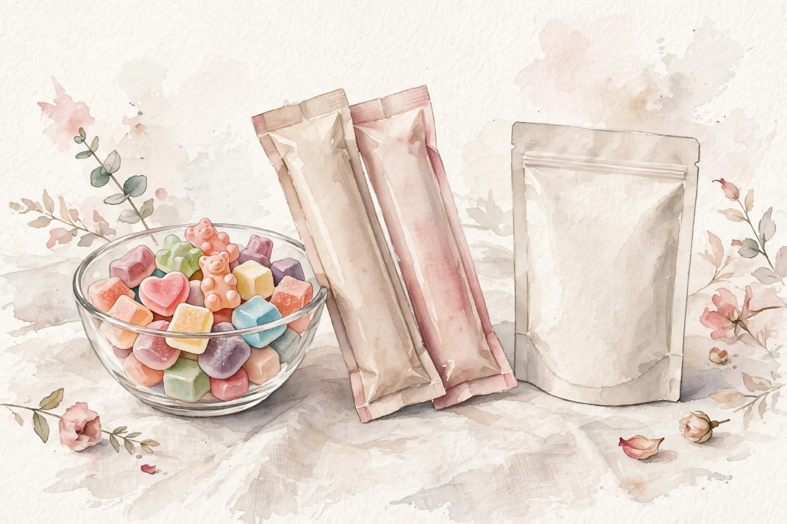

トップ ＞ インナーケア・サプリ ＞ ゼリー・グミタイプの表示の見方
ゼリー・グミタイプの表示の見方

ゼリータイプやグミタイプのサプリメントは、食べやすい形が特徴です。その分、表示の読み方には少し注意が要ります。「お菓子感覚で、つい多く食べてしまう」という声も聞きます。この記事では、この形ならではの表示の確認点を整理します。
「1個あたり」と「1日分あたり」を読み合わせる
成分量や栄養成分の表示は、「1個あたり」で書かれている場合と、「1日分（◯個）あたり」で書かれている場合があります。数字だけを見比べると、単位の違いで勘違いをします。表示の前提がどこに書かれているかを先に確認し、比べるときは単位をそろえるのが基本です。
1日の目安量が「◯個まで」と書かれている場合は、それが上限の案内です。食べやすい形だからこそ、目安量の表示の位置を最初に覚えておくと安心です。
栄養成分表示で、カロリーと糖類も見る
ゼリーやグミの形は、お菓子に近い作りのものもあります。エネルギーや炭水化物の表示を見て、自分の食生活全体の中でどう位置づけるかを確認しておくと、無理のない続け方になります。間食の習慣がある方は、置き換えるのか、追加になるのかを意識するだけでも違います。
保管は、お菓子と間違えにくい場所に
形がお菓子に似ているため、家族、特に子どもが間違えて口にしないよう、保管場所には配慮が要ります。お菓子の棚とは別の場所に置く、容器に名前を書く、個包装のまま子どもの手の届かない高さに置く、といった工夫です。
高温で溶けやすい形でもあるので、直射日光や暖房の近くを避けるのも、保管の基本になります。
持ち運びの場面でも、この形ならではの注意があります。ゼリーやグミは温度で状態が変わりやすいため、夏場の車の中や、暖房の効いた部屋に長時間置くのは避けます。カバンに入れる場合は、個包装のまま、他の荷物で押しつぶされない位置に入れるのが無難です。個包装タイプは、1回分が区切られている分、目安量の管理もしやすくなります。大容量の容器タイプは、開け閉めの回数が増えるため、清潔な手で扱うことと、蓋をきちんと閉めることが、保管の基本になります。形の手軽さと、保管の丁寧さは、セットで考えるものです。家族で味の好みが分かれる場合は、誰がどれを食べるのかを容器に書いておくと、目安量の管理もしやすくなります。食べやすさは続ける力になりますが、その分、置き場所と量の管理が大切になる形だと言えます。
サプリメントは食品であり、身体への作用を断定するものではありません。お子さまの手の届かない場所に保管し、1日の目安量は表示を確認してください。
セラフィナ「ゼリーとグミは単位の読み合わせが大事。お菓子の棚とは分けて保管しよう」